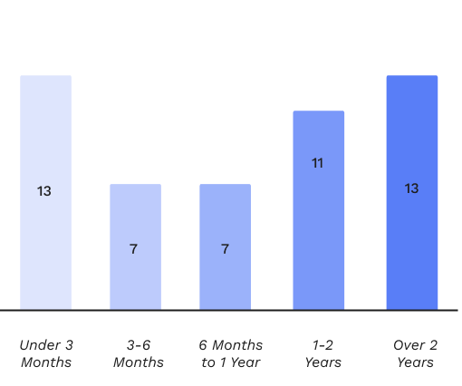
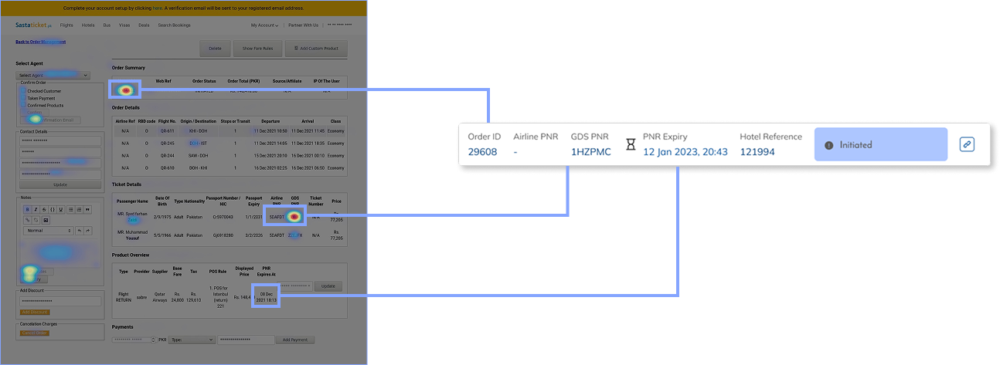

Sastaticket - Order Management System
Company:
Sastaticket
Role:
Product Designer
Year:
2021
Team:
Fatin Nawaz, Mustafa Hassan (Product Team)

Designing For Internal Users
Sastaticket's customer service team handles all queries from payment failures to last-minute cancellations. For this they use an internal order management system. Agents had to navigate a cluttered interface & cross check data. This was not an agent performance problem. It was a design problem..
242,064 UNIQUE USERS
54 AGENTS
65% FIRST CALL RESOLUTION

Agent tenure data framed personas.
Surveys and interviews with the CS team revealed two distinct user groups, new agents and experienced agents. A solution was needed that onboarded the new agent without patronising the experienced one.
| Persona | Behaviour |
|---|---|
| Agents under 3 months of experience (24%) | Struggle with workflow complexity, makes frequent calculation errors, Needs guardrails in the system to prevent mistakes. |
| Agents with over 1 year of experience (47%) | Quietly built workarounds, Cross-checks OMS data for pricing, fare rules, and live flight information. The system never earned their trust. |
Workshops identified problems and proposed solutions.
Internal stakeholders were able to pin point needs and brainstorm solutions. This revealed major pain points for agents and customers:
- Delays in refunds & adjustments.
- Miscalculations in price breakdowns & refund.
- OMS did not show live data on flights.

Re-designed component hierarchy with heatmaps
Using heatmaps of the identified the most clicked elements, grouping them by function and frequency of use.
Colour-coding order status reduced cognitive load.
This allowed agents to visually determine where a customer was in their journey and respond with speed and clarity.


Measured improvement in efficiency and satisfaction.
| User Metric | Sept 2021 | Oct 2022 |
|---|---|---|
| First Call Resolution
(Resolved on first call / Total cases) × 100
|
65% | 85% |
| Average Handling Time
(Talk + Hold + Wrap time) / Total calls
|
4 mins | 2.75 mins |
| Average Customer Wait Time
Total wait time / Total calls
|
3 mins | 1.5 mins |
| Customer Satisfaction Score
(Positive ratings / Total responses) × 100
|
85% | 90% |
| Net Promoter Score
% Promoters - % Detractors
|
8 | 9 |
| User Satisfaction
(Avg. survey score / Max possible) × 100
|
70% | 87.5% |